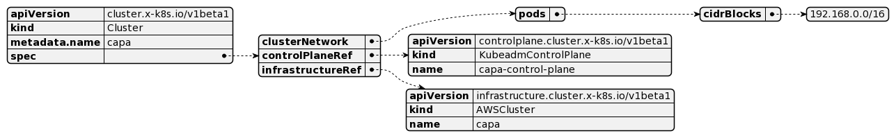
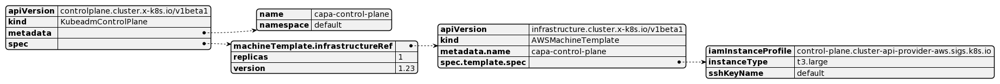
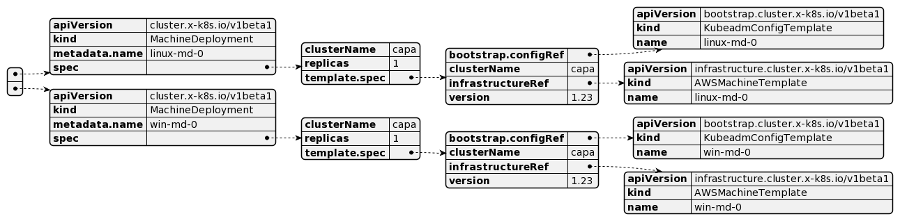
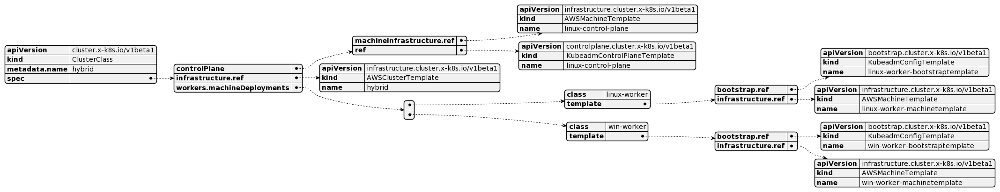
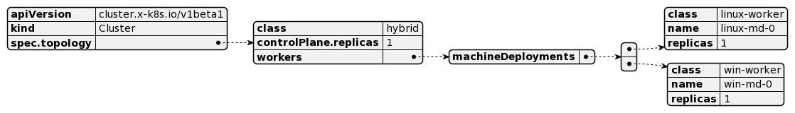

This post will be quick one to show how build a hybrid cluster using ClusterClass.
The idea behind ClusterClass is simple: define the shape of your cluster once, and reuse it many times, abstracting the complexities and the internals of a Kubernetes cluster away.
From the original CAEP: Cluster API does not expose a native way to provision multiple clusters of the same configuration. The ClusterClass object is supposed to act as a collection of template references which can be used to create managed topologies. Today, the Cluster object is a logical grouping of components which describe an underlying cluster. The user experience to create a cluster requires the user to create a bunch of underlying resources such as KCP (control plane provider), MachineDeployments, and infrastructure or bootstrap templates for those resources which logically end up representing the cluster. Since the cluster configuration is spread around multiple components, upgrading the cluster version is hard as it requires changes to different fields in different resources to perform an upgrade. The ClusterClass object aims at reducing this complexity by delegating the responsibility of lifecycle managing these underlying resources to the Cluster controller.
In the normal spec you define a Cluster and AWSCluster objects.

The KCP points to the infrastructure being it an AWSMachineTemplate and definitions of the join.

The last piece and it’s kind of detached from the cluster are the machinedeployments, what here can be created as different objects, and the node-pool is lost when translate for the cli.

One other bad issue, is the lack of reuse of these MD objects on different clusters.
Looking the objects modeling it’s very clear how beneficial these setups can be.
The ClusterClass object allow you to define a workers with a few machineDeployments specs, meaning a CC can have as many MD definitions as you want, and as you can see not necessary be used on your cluster.

Managed topologies let you start the ClusterClass, so it’s possible to have as many cluster with the similar topology using a few reusable templates.
 NOTE: The API is still in alpha.
Right now clusterctl generate yaml can be used with a few templates available, you can pass the values as environment variables and envsubst will replace the values there.
$ CLUSTER_NAME=capa \
CNI_RESOURCES=cni \
CONTROL_PLANE_MACHINE_COUNT=1 \
KUBERNETES_VERSION=1.22.10 \
WORKER_MACHINE_COUNT=1
clusterctl generate yaml \
--from https://github.com/kubernetes-sigs/cluster-api-provider-aws/blob/main/templates/cluster-template-simple-clusterclass.yaml > cluster.yaml
$ kubectl apply -f cluster.yaml
Inside the specs you start with the Cluster object that is defined as follows, topology has a class (ClusterClass reference), a controlPlane and worker fields.
apiVersion: cluster.x-k8s.io/v1beta1
kind: Cluster
metadata:
name: capa
spec:
clusterNetwork:
pods:
cidrBlocks:
- 192.168.0.0/16
topology:
class: quick-start
controlPlane:
replicas: 1
version: 1.22.10
workers:
machineDeployments:
- class: default-worker
name: md-0
replicas: 1
The CC definition is a little longer and as you can see follows the same controlPlane, infrastructure and workers references for templates.
apiVersion: cluster.x-k8s.io/v1beta1
kind: ClusterClass
metadata:
name: quick-start
spec:
controlPlane:
machineInfrastructure:
ref:
kind: AWSMachineTemplate
ref:
kind: KubeadmControlPlaneTemplate
infrastructure:
ref:
kind: AWSClusterTemplate
workers:
machineDeployments:
- class: default-worker
template:
bootstrap:
ref:
kind: KubeadmConfigTemplate
infrastructure:
ref:
kind: AWSMachineTemplate
It’s possible to dry run the objects that are going to be created or modified, the output
$ clusterctl alpha topology plan -f cluster.yaml -o out
...
Changes for Cluster "default/capa":
NAMESPACE KIND NAME ACTION
default AWSCluster capa-9p2lh created
default AWSMachineTemplate capa-control-plane-p8xvx created
default AWSMachineTemplate capa-md-0-infra-n7nm7 created
default KubeadmConfigTemplate capa-md-0-bootstrap-92gp5 created
default KubeadmControlPlane capa-wlc2n created
default MachineDeployment capa-md-0-8k6c8 created
default Secret capa-shim created
default Cluster capa modified
When these specs are generated you can find a few variables in the cluster here. The variable can then be used in a patch to set a field on a template referenced in the ClusterClass. The selector specifies on which template the patch should be applied. jsonPatches specifies which JSON patches should be applied to that template.
In this case we set the spec.template.spec.region field of the AWSClusterTemplate to the value of the variable region.
# cluster.yaml
variables:
- name: region
value: us-east-1
# cluster-class.yaml
patches:
- definitions:
- jsonPatches:
- op: add
path: /spec/template/spec/region
valueFrom:
variable: region
selector:
apiVersion: infrastructure.cluster.x-k8s.io/v1beta1
kind: AWSClusterTemplate
matchResources:
infrastructureCluster: true
name: region
The CNI can be installed via ClusterResourceSet, as the template generated, in this example I installed manually.
$ clusterctl get kubeconfig capa > capa.config
kubectl --kubeconfig=capa.config apply -f https://docs.projectcalico.org/v3.21/manifests/calico.yaml
Now you are running a full unmanaged AWS workload cluster setup in less than 5 minutes.
The evolution of the CAPI project and providers are impressive, as noted things are only starting, and features like CC brings more powerful to these controllers. Multi cloud centric management is a must on 2022, CAPI is one of the projects that definitely will help on it.
If you want to learn more about the feature watch the TGIK 178: ClusterAPI - ClusterClass & Managed Topologies
If you are interested on multi-OS in general check out this Antrea Live and send a DM